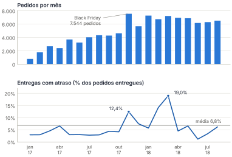
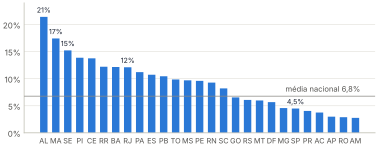
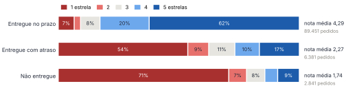
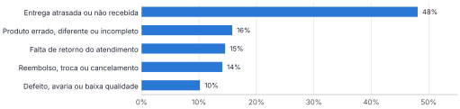

A Olist conecta pequenos e médios lojistas aos grandes marketplaces do país e, para o consumidor, é ela quem vende. A experiência de compra, porém, depende de milhares de vendedores e de várias transportadoras que a empresa não controla diretamente. Este relatório responde à pergunta proposta para a Fase 1 do Tech Challenge: como a Olist poderia utilizar IA Generativa e Agentes de IA para melhorar sua operação e seus indicadores de negócio?
Para responder, analisamos os 99.441 pedidos do conjunto de dados público da empresa, feitos entre setembro de 2016 e outubro de 2018. Quatro números resumem o diagnóstico:
A insatisfação se concentra no pós-venda. Prazo descumprido, entrega incompleta e falta de retorno do atendimento aparecem com mais frequência nas reclamações do que defeitos de produto. São falhas de coordenação e de comunicação entre muitos participantes, um tipo de problema em que agentes de IA podem ajudar: acompanham cada pedido individualmente, leem todos os comentários e respondem a qualquer hora.
Propomos três agentes que trabalham de forma coordenada. O Analista de Reviews lê e classifica cada avaliação assim que ela chega e aponta causas recorrentes por vendedor, categoria e rota. O Guardião Logístico acompanha os pedidos em trânsito, estima o risco de atraso e avisa o cliente antes que o prazo vença. O SAC Agêntico resolve no chat as solicitações mais comuns, como status, troca e devolução, dentro da política da empresa, e encaminha as exceções para um atendente.
O efeito esperado é reduzir as avaliações negativas ligadas à entrega, diminuir os contatos repetitivos no atendimento e dar à Olist informação para agir sobre vendedores e transportadoras com desempenho ruim. As metas do capítulo 9 são tratadas como hipóteses a validar em piloto. Recomendamos começar pelo Analista de Reviews, em um piloto de 30 dias sobre a base histórica: é o agente de menor risco, porque não fala diretamente com clientes, e o que gera a informação de que os outros dois dependem.
A Olist funciona como uma loja de departamentos dentro dos grandes marketplaces brasileiros. O lojista assina um único contrato, cadastra seus produtos uma vez e passa a vendê-los nesses canais por meio da loja da Olist. Quando a venda acontece, o vendedor é notificado, separa o pedido e o envia com o apoio dos parceiros logísticos da Olist. Depois da entrega, ou quando a data prevista chega, o cliente recebe por e-mail uma pesquisa de satisfação, na qual dá uma nota de 1 a 5 e pode deixar um comentário (OLIST, 2018).
O modelo dá escala a quem sozinho não teria acesso aos grandes canais, mas cria uma dependência. Para o consumidor, quem vendeu foi a Olist. Um atraso da transportadora ou um item esquecido por um dos mais de três mil vendedores vira uma avaliação negativa para a loja, e a reputação da loja nos marketplaces afeta a visibilidade e a conversão de todos os lojistas que vendem por ela.
Neste trabalho, o grupo atua como uma consultoria contratada para iniciar a jornada de IA da Olist. A pergunta que orienta a Fase 1 é:
“Como a Olist poderia utilizar IA Generativa e Agentes de IA para melhorar sua operação e seus indicadores de negócio?”
Nesta etapa o foco é entender o negócio, identificar oportunidades e desenhar uma visão inicial. Não faz parte do escopo desenvolver software; os agentes são descritos no nível de objetivo, dados, responsabilidades e limites, para que possam ser prototipados nas fases seguintes do curso.
O objetivo geral é propor um conjunto inicial de agentes de IA para a Olist, fundamentado em evidências do conjunto de dados e ligado a indicadores de negócio. Os objetivos específicos são:
O trabalho seguiu quatro etapas. Primeiro, exploramos as oito tabelas do dataset com Python e a biblioteca pandas para medir prazos, notas, recompra e desempenho por região, categoria e vendedor. Em seguida, agrupamos por tema os 10.831 comentários de avaliações com nota 1 ou 2, usando regras de palavras-chave definidas a partir dos termos mais frequentes nesses textos. Com o diagnóstico em mãos, listamos as oportunidades e as ordenamos por impacto, viabilidade e risco. Por fim, desenhamos os agentes, a arquitetura e os prompts para as três oportunidades mais bem avaliadas.
Duas definições são usadas ao longo do texto. Consideramos atrasado o pedido entregue em data posterior à data estimada informada ao cliente na compra, e avaliação negativa a de nota 1 ou 2. O código que gera todos os números e gráficos acompanha este relatório (analise/analise_olist.py), o que permite reproduzir a análise.
Russell e Norvig (2022) definem a inteligência artificial como o estudo de agentes que percebem o ambiente e agem para atingir objetivos. Boa parte das aplicações atuais vem do aprendizado de máquina, em que o sistema aprende padrões a partir de exemplos em vez de seguir regras escritas uma a uma. O Quadro 1 resume as três formas clássicas de aprendizado e onde cada uma poderia ser usada na Olist.
Quadro 1 – Paradigmas de aprendizado de máquina e exemplos no contexto da Olist
| Paradigma | Como o modelo aprende | Exemplo de aplicação na Olist |
|---|---|---|
| Supervisionado | a partir de exemplos já rotulados com a resposta correta | prever se um pedido vai atrasar, treinando com pedidos passados cuja data de entrega já é conhecida |
| Não supervisionado | encontrando grupos e padrões em dados sem rótulo | agrupar vendedores por perfil de desempenho; detectar comportamentos fora do padrão em pedidos |
| Por reforço | por tentativa e erro, guiado por recompensas | ajustar regras de roteamento e de frete conforme o resultado observado nas entregas |
Fonte: elaborado pelos autores (2026), com base em Russell e Norvig (2022).
A IA generativa é um caso particular. Os grandes modelos de linguagem (LLMs) são treinados com volumes enormes de texto e produzem conteúdo novo a partir de uma instrução em linguagem natural, o prompt. Para a Olist, isso significa ler e escrever em português em escala: entender o que um cliente quis dizer em um comentário, redigir uma resposta, resumir milhares de avaliações em poucos parágrafos.
Um assistente generativo responde quando alguém pergunta. Um agente recebe um objetivo e decide os passos para alcançá-lo: consulta dados, usa ferramentas, avalia o resultado e repete o ciclo até concluir a tarefa ou pedir ajuda (WENG, 2023). Quatro componentes aparecem em praticamente todas as descrições de agentes, e o Quadro 2 os ilustra com um dos agentes propostos neste relatório.
Quadro 2 – Componentes de um agente de IA, ilustrados pelo Guardião Logístico
| Componente | Função | No Guardião Logístico |
|---|---|---|
| Percepção | receber informações do ambiente | eventos de rastreio e mudanças no status do pedido |
| Raciocínio e planejamento | interpretar a situação e decidir o próximo passo | comparar a posição do pacote com o prazo prometido e estimar o risco |
| Ferramentas (ação) | agir sobre sistemas externos | enviar mensagem ao cliente; abrir chamado com a transportadora |
| Memória | guardar o que já aconteceu | registrar que o cliente já foi avisado, para não repetir a mensagem |
Fonte: elaborado pelos autores (2026), com base em Weng (2023) e Russell e Norvig (2022).
A diferença prática entre os dois tipos de sistema aparece no Quadro 3.
Quadro 3 – Diferenças entre um assistente generativo e um agente de IA
| Aspecto | Assistente generativo | Agente de IA |
|---|---|---|
| Início da ação | responde a uma pergunta do usuário | parte de um objetivo ou de um evento, como a mudança no status de um pedido |
| Memória | limitada à conversa em andamento | histórico persistente do cliente e do pedido |
| Ferramentas | em geral, nenhuma | consulta sistemas e executa ações dentro de permissões definidas |
| Tratamento de erros | entrega a resposta, certa ou errada | observa o resultado da ação e pode corrigir o rumo |
Fonte: elaborado pelos autores (2026).
Nem todo problema pede um agente. Processos previsíveis, com passos sempre iguais, costumam ser resolvidos com automações simples, que são mais baratas e mais fáceis de auditar. A autonomia de um agente se justifica quando a tarefa exige interpretar situações que mudam de caso para caso (ANTHROPIC, 2024). Usamos esse critério na priorização do capítulo 4.
Raciocinar e agir (ReAct). O modelo alterna pensamento, ação e observação: decide consultar o rastreio, lê o resultado e só então redige a mensagem ao cliente. Como cada passo se apoia em dados efetivamente consultados, o padrão reduz respostas inventadas e deixa o raciocínio registrado para auditoria (YAO et al., 2023).
Geração aumentada por recuperação (RAG). Antes de responder, o agente busca trechos relevantes em uma base de documentos, como a política de trocas ou as regras do Código de Defesa do Consumidor, e responde com base neles (LEWIS et al., 2020). Assim, a regra de devolução aplicada vem do documento oficial, e não do que o modelo “lembra”.
Memória. Seguindo a ideia de Park et al. (2023), tratamos a memória como um registro de eventos de cada cliente e pedido, recuperado conforme a recência, a importância e a relevância para a situação atual.
Sistemas multiagentes. Em vez de um único agente que faz tudo, vários agentes especializados, cada um com escopo, ferramentas e permissões próprias, trocam informações por meio de um orquestrador e de uma memória comum (WOOLDRIDGE, 2009). Escopos menores tornam cada agente mais fácil de testar e de controlar.
Pessoa no circuito (human-in-the-loop). Decisões com impacto financeiro ou de reputação passam pela aprovação de uma pessoa. A autonomia é ampliada aos poucos, à medida que o agente demonstra bom desempenho.
O Brazilian E-Commerce Public Dataset by Olist reúne 99.441 pedidos feitos entre setembro de 2016 e outubro de 2018, com dados anonimizados de 96.096 clientes, 3.095 vendedores e 32.951 produtos de 73 categorias (OLIST, 2018). Os pedidos somam R$ 16,0 milhões em pagamentos, com valor médio de R$ 160,99 e mediano de R$ 105,29. O cartão de crédito responde por 74% dos pagamentos e o boleto, por 19%. O Quadro 4 descreve as tabelas e o uso que fizemos de cada uma.
Quadro 4 – Tabelas do dataset e uso na análise
| Tabela | Conteúdo | Uso nesta análise |
|---|---|---|
| orders | 99.441 pedidos, com status e datas de compra, postagem, entrega e prazo estimado | prazos, atrasos e sazonalidade |
| order_items | 112.650 itens, com preço, frete, vendedor e prazo-limite de postagem | frete, pedidos com vários itens ou vendedores, postagem fora do prazo |
| order_payments | forma de pagamento, número de parcelas e valor | valor dos pedidos e meios de pagamento |
| order_reviews | 99.224 avaliações, com nota, título e comentário | satisfação e temas de reclamação |
| customers | cliente e localização (CEP, cidade e UF) | análise regional e recompra |
| sellers | 3.095 vendedores e sua localização | concentração e desempenho dos vendedores |
| products | categoria, peso, dimensões e número de fotos | categorias com mais avaliações negativas |
| geolocation | coordenadas aproximadas por prefixo de CEP | reservada para análise de rotas nas próximas fases |
Fonte: elaborado pelos autores (2026), com base em Olist (2018).
O volume mensal passou de cerca de 800 pedidos em janeiro de 2017 para algo entre 6 e 7 mil por mês ao longo de 2018 (Figura 1). O pico isolado foi novembro de 2017, mês da Black Friday, com 7.544 pedidos. A taxa de atraso acompanhou os momentos de pressão: subiu para 12,4% em novembro de 2017 e chegou a 19,0% em março de 2018, quase o triplo da média do período, de 6,8%.
Figura 1 – Pedidos por mês e percentual de entregas com atraso (jan. 2017 a ago. 2018)

Fonte: elaborado pelos autores (2026), com base em Olist (2018). Foram excluídos 2016 e os meses de setembro e outubro de 2018, com poucos pedidos na base.
O dataset não traz informação que explique sozinha o pico de fevereiro e março de 2018. O padrão, porém, sugere que a operação perde previsibilidade quando o volume sobe, justamente quando mais clientes são afetados. Um monitoramento que dependa de pessoas olhando pedido por pedido tende a falhar nesses momentos.
Na mediana, um pedido levou 10,2 dias para chegar, enquanto o prazo informado na compra foi de 23,2 dias. Quase três em cada quatro pedidos chegaram com uma semana ou mais de antecedência. A promessa de entrega é, portanto, conservadora. Mesmo assim, cerca de 6,5 mil entregas (6,8%) a ultrapassaram, com atraso mediano de 7,5 dias.
O problema é desigual no território (Figura 2). Em Alagoas, 21% das entregas atrasaram; no Maranhão, 17%; em Sergipe, 15%. O Rio de Janeiro merece atenção à parte: com 12% de atraso e mais de 12 mil pedidos entregues, é o segundo estado em número absoluto de pedidos atrasados, atrás apenas de São Paulo, cuja taxa de atraso é de 4,5%.
Figura 2 – Percentual de entregas com atraso por UF do cliente

Fonte: elaborado pelos autores (2026), com base em Olist (2018). Considera 96.470 pedidos entregues.
Parte do atraso começa antes do transporte. Em 9,0% dos pedidos entregues, o vendedor postou a mercadoria depois do prazo-limite. Nesses casos, a chance de a entrega atrasar sobe de 5,4% para 20,8%, quase quatro vezes mais. Ainda assim, a postagem tardia aparece em apenas 28% dos pedidos atrasados. O restante do atraso se concentra no trecho da transportadora, que nos pedidos atrasados levou, em mediana, 26 dias, contra 7 dias no conjunto dos pedidos.
O que isso significa para um agente. A postagem fora do prazo e a falta de movimentação no rastreio são sinais disponíveis dias antes de o prazo vencer. Um agente pode acompanhar esses sinais pedido a pedido e agir enquanto ainda há tempo de avisar o cliente ou cobrar o vendedor e a transportadora.
Das 99.224 avaliações, 14,7% têm nota 1 ou 2 e 57,8% têm nota 5. A nota cai drasticamente quando a entrega falha (Figura 3). Pedidos entregues no prazo têm nota média 4,29; com atraso, 2,27; os que não chegaram a ser entregues, 1,74. Entre os pedidos atrasados, 62% receberam 1 ou 2 estrelas, contra 9% dos entregues no prazo.
Figura 3 – Distribuição das notas segundo a situação da entrega

Fonte: elaborado pelos autores (2026), com base em Olist (2018). “Não entregue” inclui pedidos cancelados, indisponíveis e ainda em trânsito no fim da base.
Visto pelo outro lado, 43% das avaliações negativas vêm de pedidos atrasados (27%) ou não entregues (15%). Os outros 57% vêm de pedidos que chegaram no prazo, o que aponta para problemas de produto, de separação do pedido ou de atendimento. Três quartos das avaliações negativas trazem comentário escrito, e são esses textos que mostram o que deu errado:
“Comprei duas mochilas, recebi apenas uma, o natal está chegando e até agora nada!”
“Estou esperando há mais de vinte dias e ainda não recebi meu produto e não consigo nenhuma informação.”
“pedi duas unidades do mesmo produto e só veio uma unidade e ninguém me da um retorno”
Comentários de avaliações com nota 1 ou 2, reproduzidos sem correção (OLIST, 2018).
Classificamos os 10.831 comentários negativos por tema (Figura 4). Como um mesmo comentário pode citar mais de um problema, os percentuais somam mais de 100%. Quase metade fala de entrega, seja atraso ou não recebimento. Em seguida aparecem produto errado, diferente ou incompleto (16%), falta de retorno do atendimento (15%), pedidos de reembolso, troca ou cancelamento (14%) e defeito ou avaria (10%).
Figura 4 – Temas citados nos comentários de avaliações com nota 1 ou 2

Fonte: elaborado pelos autores (2026), com base em Olist (2018). Classificação por palavras-chave; um comentário pode ter mais de um tema.
A classificação por palavras-chave é aproximada e serve para dimensionar o problema, não para uso operacional. Ainda assim, deixa claro que os comentários explicam boa parte da insatisfação e que valeria a pena lê-los de forma sistemática, o que é inviável manualmente no volume da Olist.
Cerca de 10% dos pedidos têm mais de um item. Neles, a proporção de avaliações negativas é de 27,6%, mais que o dobro da observada em pedidos de item único (12,7%). Quando o pedido envolve mais de um vendedor, situação de 1,3% dos pedidos, a proporção chega a 47%. Os itens saem de lugares diferentes e chegam em datas diferentes, e o cliente, que não foi avisado disso, entende que recebeu o pedido incompleto. É sobretudo uma falha de comunicação, que um aviso proativo poderia evitar.
Apenas 3,1% dos 96.096 clientes fizeram mais de um pedido no período. Considerando só quem comprou pela primeira vez até fevereiro de 2018, e portanto teve ao menos seis meses para voltar, a taxa sobe para 4,1%. Parte desse resultado é estrutural, porque o cliente compra dentro do marketplace e pode nem perceber que a loja é a Olist. Mesmo assim, a experiência de entrega pesa: entre esses clientes, os que tiveram o primeiro pedido atrasado recompraram 3,1%, contra 4,1% dos que receberam no prazo, uma recompra cerca de 24% menor. Trata-se de uma correlação, pois a análise não isola outros fatores, mas ela reforça a ligação entre entrega e retenção.
A base de vendedores é concentrada. Seis em cada dez estão em São Paulo, e os 10% de maior faturamento respondem por 67% da receita de produtos. Isso facilita a ação, porque acompanhar algumas centenas de vendedores cobre a maior parte do volume. Entre as categorias com pelo menos 500 pedidos, móveis de escritório tem a maior proporção de avaliações negativas (22,6%), seguida de cama, mesa e banho (16,8%), que é também a categoria mais vendida, e de móveis e decoração (16,7%). São produtos volumosos ou que dependem de medidas e cores corretas, o que sugere investigar a embalagem e a descrição dos anúncios. Há ainda 1,9% de produtos sem categoria cadastrada, um sinal de qualidade de catálogo a acompanhar.
O Quadro 5 reúne os problemas identificados, a evidência que os sustenta e a oportunidade de IA associada a cada um.
Quadro 5 – Problemas identificados, evidências e oportunidades de IA
| Problema | Evidência no dataset | Efeito no negócio | Oportunidade de IA |
|---|---|---|---|
| Atrasos concentrados em regiões e picos | 6,8% de atraso; 21% em AL; 19% em mar./2018; postagem tardia quase quadruplica o risco | avaliações negativas, contatos no atendimento e cancelamentos | monitorar cada pedido e agir antes de o prazo vencer |
| Insatisfação registrada em texto e pouco aproveitada | 14,7% de notas 1 e 2; 10.831 comentários negativos | perda de reputação; problemas de vendedor percebidos tarde | classificar avaliações e apontar causas por vendedor, categoria e rota |
| Pós-venda com falhas de comunicação | 15% dos comentários negativos citam falta de retorno; 47% de notas baixas em pedidos com mais de um vendedor | retrabalho no atendimento e escalada da insatisfação | atendimento automatizado com acesso ao histórico do pedido |
| Baixa recompra | 3,1% dos clientes compram de novo; recompra 24% menor após atraso | custo de aquisição alto por venda | relacionamento personalizado no pós-venda |
| Qualidade do catálogo em algumas categorias | 22,6% de notas baixas em móveis de escritório; 1,9% de produtos sem categoria | devoluções e avaliações negativas | revisão assistida de anúncios |
Fonte: elaborado pelos autores (2026), com base em Olist (2018).
Do diagnóstico saíram seis oportunidades. Avaliamos cada uma em três critérios, com notas de 1 a 5: o impacto esperado nos indicadores do negócio; a viabilidade com os dados e sistemas que a Olist já possui; e o risco de uma decisão errada do agente, em que nota alta significa risco baixo. A soma das notas orienta a ordem de implantação (Tabela 1).
Tabela 1 – Priorização das oportunidades de IA
| Oportunidade | Impacto | Viabilidade | Risco (5 = baixo) | Total | Decisão |
|---|---|---|---|---|---|
| Análise automática de avaliações | 4 | 5 | 5 | 14 | priorizada |
| Monitoramento proativo de entregas | 5 | 4 | 4 | 13 | priorizada |
| Atendimento, trocas e devoluções no chat | 5 | 3 | 3 | 11 | priorizada |
| Relacionamento e estímulo à recompra | 4 | 3 | 4 | 11 | fases seguintes |
| Revisão assistida de anúncios | 3 | 4 | 4 | 11 | fases seguintes |
| Previsão de demanda para vendedores | 3 | 2 | 4 | 9 | fases seguintes |
Fonte: elaborado pelos autores (2026).
Três oportunidades empataram com 11 pontos. Escolhemos o atendimento por dois motivos: tem o maior impacto, já que falta de retorno e dificuldades com troca e reembolso estão entre as reclamações mais citadas, e completa os outros dois agentes, usando a informação que eles produzem. O relacionamento para recompra fica para a Fase 2 porque depende de um pós-venda estável. Estimular a segunda compra de quem teve uma primeira experiência ruim tende a dar pouco resultado.
Os três agentes escolhidos cobrem as etapas em que a experiência do cliente mais se deteriora, ou seja, entrega, avaliação e atendimento, e se reforçam mutuamente: o que um aprende serve de entrada para o outro. A sequência de implantação segue a ordem da Tabela 1, do menor para o maior risco.
A Figura 5 apresenta os três agentes propostos, com objetivo, problema resolvido, usuários envolvidos e benefício esperado, e o Quadro 6 define o que cada um pode fazer sozinho, o que depende de aprovação humana e os principais riscos. Os números citados vêm do diagnóstico do capítulo 3.
Figura 5 – Mapa dos agentes de IA propostos para a Olist
AGENTE 01
Analista de Reviews
Objetivo
Ler cada avaliação assim que chega, classificar o sentimento e a causa do problema e consolidar padrões por vendedor, categoria e rota.
Problema resolvido
14,7% das avaliações são negativas e três quartos delas trazem comentário. Sem leitura sistemática, problemas recorrentes de um vendedor ou produto demoram a ser percebidos.
Usuários envolvidos
Equipe de qualidade do marketplace, gestão de vendedores, vendedores (por meio de um painel) e diretoria (resumo semanal).
Benefício esperado
Problemas detectados em dias, e não em semanas; prioridade clara de quais vendedores e categorias tratar; insumo para os outros dois agentes.
|
AGENTE 02
Guardião Logístico
Objetivo
Acompanhar os pedidos em trânsito, estimar o risco de atraso e agir antes do vencimento do prazo: avisar o cliente, cobrar a postagem do vendedor e acionar a transportadora.
Problema resolvido
6,8% das entregas atrasam, com até 21% em alguns estados e 19% em meses de pico. Pedidos atrasados têm nota média 2,3, contra 4,3 dos entregues no prazo.
Usuários envolvidos
Clientes, equipe de operações logísticas, vendedores e transportadoras parceiras.
Benefício esperado
Cliente informado antes de reclamar, menos contatos do tipo “onde está meu pedido” e menos avaliações negativas causadas por atraso.
|
AGENTE 03
SAC Agêntico
Objetivo
Atender o cliente no chat e no WhatsApp, informar a situação do pedido e conduzir trocas, devoluções e cancelamentos dentro da política, encaminhando as exceções a um atendente.
Problema resolvido
Falta de retorno (15%) e dificuldades com reembolso, troca ou cancelamento (14%) estão entre as reclamações mais citadas. Pedidos não entregues têm nota média 1,7.
Usuários envolvidos
Clientes, analistas de atendimento (casos escalados), financeiro (estornos) e vendedores.
Benefício esperado
Resposta imediata a qualquer hora, política aplicada de forma consistente e atendentes dedicados aos casos que exigem julgamento.
|
Fonte: elaborado pelos autores (2026).
Quadro 6 – Autonomia, limites e riscos de cada agente
| Analista de Reviews | Guardião Logístico | SAC Agêntico | |
|---|---|---|---|
| Autonomia | baixa: analisa e recomenda | média: envia avisos padronizados | média: resolve casos previstos na política |
| Age sem aprovação | classificar avaliações; gerar alertas e relatórios | avisar o cliente com modelo aprovado; lembrar o vendedor da postagem; abrir chamado com a transportadora | informar status; aprovar troca ou devolução elegível de até R$ 500; gerar etiqueta de postagem |
| Exige aprovação humana | qualquer medida contra um vendedor | compensação financeira ao cliente; alteração do prazo prometido | valores acima de R$ 500; casos fora da política; cliente que pede um atendente |
| Principais riscos | classificação errada (ironia, gírias); julgamento injusto de vendedor | alarme falso; nova data que também não se cumpre | aprovação indevida; promessa que a empresa não cumpre; exposição de dados pessoais |
Fonte: elaborado pelos autores (2026).
A Figura 6 mostra como os agentes se conectam às fontes de dados e a quem entregam resultados. O desenho é conceitual: não define fornecedores nem tecnologias, que serão escolhidos na fase de prototipação. A arquitetura tem três camadas.
Figura 6 – Arquitetura conceitual da solução multiagente
Fonte: elaborado pelos autores (2026).
A primeira camada reúne as fontes de dados: a base transacional (pedidos, itens, pagamentos, clientes, vendedores e produtos), as avaliações, os eventos de rastreamento das transportadoras, as mensagens dos canais de atendimento e os documentos de política, que alimentam a busca por RAG.
Na segunda camada, um orquestrador recebe cada evento, como uma nova avaliação, uma mudança no rastreio ou uma mensagem de cliente, e aciona o agente responsável. Os três agentes compartilham uma memória com o histórico de cada cliente e pedido, e todas as chamadas passam pelos mesmos controles: remoção de dados pessoais desnecessários antes do envio ao modelo, limites de autonomia e registro das decisões.
A terceira camada reúne as saídas e os usuários: mensagens e etiquetas para clientes, uma fila de exceções com o caso resumido para o atendimento humano, alertas para vendedores e para a operação logística, e um painel de indicadores para a gestão. O Quadro 7 detalha as entradas, as saídas e as interações de cada agente.
Quadro 7 – Entradas, saídas e interações de cada agente
| Agente | Entradas | Saídas | Interage com |
|---|---|---|---|
| Analista de Reviews | avaliações (nota e comentário); dados do pedido, do produto e do vendedor | classificação de cada avaliação; alertas por vendedor e categoria; relatório semanal | envia ao Guardião os padrões de atraso por rota e vendedor; recebe do SAC os motivos de contato |
| Guardião Logístico | prazos do pedido; eventos de rastreio; prazo-limite de postagem; histórico de atraso por rota | aviso ao cliente; lembrete ao vendedor; chamado com a transportadora | registra na memória os pedidos em risco e os avisos enviados, consultados pelo SAC |
| SAC Agêntico | mensagem do cliente; histórico do pedido; trechos da política (RAG); pagamentos | resposta ao cliente; etiqueta de devolução; caso escalado com resumo | usa a memória alimentada pelo Guardião; envia ao Analista os motivos de contato |
Fonte: elaborado pelos autores (2026).
Para tornar o desenho concreto, acompanhamos um pedido de jogo de cama, da categoria mais vendida, comprado por uma cliente de Maceió, capital do estado com a maior taxa de atraso da base.
Os prompts a seguir são instruções de sistema, isto é, o texto fixo que define o papel e as regras de cada agente. Todos seguem a mesma estrutura: papel, dados recebidos, tarefa, regras e formato da resposta. Pedir a resposta em JSON permite que outros sistemas leiam o resultado e que se verifique automaticamente se o agente respondeu no formato combinado. Os campos entre chaves, como {comentario}, são preenchidos pelo orquestrador a cada execução.
a) Objetivo do prompt. Classificar uma avaliação quanto a sentimento, causa principal e urgência, e indicar a área responsável e a ação sugerida.
b) Contexto fornecido. Identificador do pedido; nota; comentário; categoria do produto; situação da entrega e dias de atraso; quantidade de itens e de vendedores no pedido.
c) Instrução principal.
Você é o Analista de Reviews da Olist, uma loja que reúne milhares de pequenos vendedores nos grandes marketplaces. Sua função é entender por que o cliente ficou insatisfeito e indicar quem deve agir. Dados da avaliação: - Pedido: {id_pedido} - Nota: {nota} de 5 - Comentário: "{comentario}" - Categoria do produto: {categoria} - Situação da entrega: {situacao_entrega} ({dias_atraso} dias de atraso) - Itens no pedido: {qtd_itens}, de {qtd_vendedores} vendedor(es) Tarefa: 1. Classifique o sentimento como positivo, neutro ou negativo, considerando o texto e não apenas a nota. 2. Se houver problema, escolha a causa principal entre: atraso na entrega, pedido não recebido, entrega parcial, produto errado ou diferente do anúncio, defeito ou avaria, atendimento, outro. 3. Defina a urgência: alta se o cliente ainda não recebeu o produto ou pede reembolso; média se recebeu com problema; baixa nos demais casos. 4. Indique a área responsável (logística, vendedor, atendimento ou catálogo) e sugira uma ação em até 25 palavras. Regras: - Use apenas as informações fornecidas. Se o comentário estiver vazio ou for ambíguo, use a causa "outro" e confiança "baixa". - Não inclua nome, telefone, e-mail ou documento do cliente na resposta. - Responda somente com o JSON no formato indicado, sem texto adicional.
d) Resultado esperado. Para o comentário real “pedi duas unidades do mesmo produto e só veio uma unidade e ninguém me da um retorno”, em um pedido de dois itens entregue no prazo, a saída esperada é:
{
"id_pedido": "a3f9c1e2",
"sentimento": "negativo",
"causa_principal": "entrega parcial",
"causa_secundaria": "atendimento",
"urgencia": "alta",
"area_responsavel": "vendedor",
"acao_sugerida": "Confirmar com o vendedor o envio da segunda unidade e informar o cliente sobre a nova data ou o reembolso parcial.",
"confianca": "alta"
}
a) Objetivo do prompt. Avaliar o risco de atraso de um pedido em trânsito e decidir quais ações tomar: avisar o cliente, cobrar o vendedor ou acionar a transportadora.
b) Contexto fornecido. Datas de compra e de entrega prometida; prazo-limite e data efetiva de postagem; último evento de rastreio; UF de origem e de destino; taxa histórica de atraso para o destino; avisos já enviados ao cliente (memória).
c) Instrução principal.
Você é o Guardião Logístico da Olist. Seu objetivo é evitar que o cliente seja surpreendido por um atraso. Você acompanha pedidos em trânsito e decide se é preciso agir. Dados do pedido: - Pedido: {id_pedido} | Compra: {data_compra} | Entrega prometida: {data_prometida} - Postagem: limite em {limite_postagem}, realizada em {data_postagem} - Último evento de rastreio: "{ultimo_evento}" em {data_evento} - Rota: {uf_origem} para {uf_destino} (destino com {taxa_atraso_destino}% de atraso histórico) - Avisos já enviados ao cliente: {avisos_anteriores} Tarefa: 1. Classifique o risco de atraso como baixo, médio ou alto e explique o motivo em uma frase. 2. Se o risco for médio ou alto e o cliente ainda não tiver sido avisado, redija uma mensagem de WhatsApp de até 300 caracteres, em tom cordial e sem jargão. Use o marcador {primeiro_nome} no lugar do nome do cliente. 3. Se a postagem ainda não tiver sido feita e o prazo-limite já tiver passado, gere um lembrete ao vendedor. 4. Se o atraso previsto for maior que 3 dias, indique a abertura de chamado com a transportadora. Regras: - Nunca prometa compensação, desconto ou data que não esteja nos dados. - Não envie mais de um aviso ao mesmo cliente em um intervalo de 48 horas. - Responda somente com o JSON no formato indicado, sem texto adicional.
d) Resultado esperado. Pedido de São Paulo para Alagoas, postado dois dias depois do limite e parado há quatro dias no centro de distribuição. Como a postagem já foi feita, não há lembrete ao vendedor; como o atraso previsto passa de 3 dias, abre-se o chamado. O sistema substitui o marcador pelo nome do cliente só no momento do envio, de modo que o modelo não tem acesso a esse dado.
{
"id_pedido": "7b21e0d4",
"risco_atraso": "alto",
"motivo": "Postagem 2 dias após o limite e pacote parado há 4 dias; destino AL tem 21% de atraso histórico.",
"dias_atraso_previstos": 5,
"mensagem_cliente": "Olá, {primeiro_nome}! Seu pedido teve um atraso no transporte e a nova previsão de entrega é 18/10. Já estamos acompanhando com a transportadora e avisaremos qualquer novidade por aqui.",
"lembrete_vendedor": null,
"abrir_chamado_transportadora": true
}
a) Objetivo do prompt. Resolver no chat solicitações de status, troca, devolução e cancelamento conforme a política da Olist e encaminhar a um atendente o que estiver fora das regras.
b) Contexto fornecido. Mensagem do cliente; dados do pedido (itens, valor, datas e situação); histórico do cliente e avisos já enviados (memória); trechos da política de trocas e devoluções recuperados da base de conhecimento.
c) Instrução principal.
Você é o assistente virtual de atendimento da Olist e conversa com clientes pelo chat e pelo WhatsApp. Resolva o que estiver ao seu alcance e seja transparente quando precisar passar o caso para um atendente. Informações disponíveis: - Mensagem do cliente: "{mensagem}" - Pedido: {id_pedido} | Valor: R$ {valor} | Entregue em: {data_entrega} - Histórico do cliente e do pedido: {memoria} - Política aplicável: {trechos_politica} Tarefa: 1. Identifique a intenção: consultar status, trocar, devolver por arrependimento, relatar defeito, cancelar ou outra. 2. Verifique a elegibilidade usando apenas a política fornecida. A devolução por arrependimento vale por 7 dias a partir do recebimento (CDC, art. 49). 3. Se o caso for elegível e o valor for de até R$ 500, aprove e acione a ferramenta gerar_etiqueta_devolucao. 4. Encaminhe para um atendente se o valor passar de R$ 500, se a política não cobrir o caso ou se o cliente pedir para falar com uma pessoa. 5. Escreva a resposta ao cliente em linguagem simples, em até 4 frases. Regras: - Apresente-se como assistente virtual na primeira mensagem. - Não invente prazos, valores ou regras que não estejam nas informações acima. - Não peça nem repita CPF, endereço ou dados de cartão. - Responda somente com o JSON no formato indicado, sem texto adicional.
d) Resultado esperado. Cliente pede para devolver, por arrependimento, um produto de R$ 189,90 recebido há três dias:
{
"id_atendimento": "chat-55120",
"intencao": "devolver por arrependimento",
"elegivel": true,
"acao_executada": "gerar_etiqueta_devolucao",
"codigo_postagem": "LR482913057BR",
"encaminhar_humano": false,
"motivo_encaminhamento": null,
"resposta_cliente": "Pronto, sua devolução foi aprovada! Enviamos a etiqueta de postagem para o seu e-mail; é só levar o produto embalado a uma agência dos Correios. O estorno é feito assim que o vendedor receber o item, conforme a nossa política de devolução."
}
Os três prompts compartilham três cuidados: limitar o agente aos dados fornecidos, fixar o formato da resposta e deixar explícito quando ele deve parar e chamar uma pessoa. Antes de qualquer uso real, cada prompt seria testado contra uma amostra do histórico. No caso do Analista de Reviews, por exemplo, a classificação do agente seria comparada com a de analistas humanos em algumas centenas de avaliações.
Proteção de dados. Os agentes recebem apenas os dados necessários para cada tarefa. Nome, CPF, telefone e endereço são removidos ou trocados por marcadores antes do envio ao modelo e reinseridos depois, no momento do envio da mensagem, como no exemplo do Guardião Logístico. O tratamento se apoia na execução do contrato com o cliente e no legítimo interesse, previstos no art. 7º da Lei Geral de Proteção de Dados (BRASIL, 2018), e os registros seguem prazos de retenção definidos.
Permissões mínimas. Cada agente acessa somente o que precisa. O Analista de Reviews apenas lê dados. O Guardião envia mensagens a partir de modelos aprovados. Só o SAC aciona ferramentas que geram custo, como etiquetas e estornos, e sempre dentro de limites de valor.
Regras críticas verificadas por código. Limites como o valor de R$ 500 e o prazo de 7 dias são conferidos por regras fixas no sistema, e não apenas pela instrução ao modelo. Se a resposta do agente violar uma regra, a ação é bloqueada e o caso vai para um atendente.
Transparência e rastreabilidade. O cliente sabe quando conversa com um assistente virtual e pode pedir um atendente a qualquer momento. Cada decisão fica registrada com os dados usados e a justificativa, o que permite auditar e corrigir erros.
Para as fases seguintes, propomos adotar como referência o AI Risk Management Framework do NIST (2023) e a norma ISO/IEC 42001 (INTERNATIONAL ORGANIZATION FOR STANDARDIZATION, 2023), que organizam papéis, avaliação de riscos e monitoramento contínuo de sistemas de IA.
Quadro 8 – Principais riscos, probabilidade, impacto e mitigação
| Risco | Probabilidade | Impacto | Mitigação |
|---|---|---|---|
| Resposta inventada, como uma regra de devolução inexistente | média | alto | política recuperada da base oficial (RAG); proibição explícita no prompt; validação do formato; revisão por amostragem |
| Exposição de dados pessoais | baixa | alto | remoção de dados pessoais antes do modelo; acesso mínimo; contrato com o fornecedor do modelo vedando a retenção dos dados |
| Aprovação indevida de devolução ou compensação | média | médio | limite de R$ 500; elegibilidade conferida por regras fixas; auditoria semanal por amostragem |
| Alarme falso de atraso | média | baixo | aviso apenas com risco médio ou alto; no máximo um aviso a cada 48 horas; calibração com o histórico |
| Julgamento injusto de um vendedor | baixa | médio | nenhuma medida automática; revisão humana antes de qualquer ação |
| Falha de sistemas externos (rastreio, Correios) | média | médio | novas tentativas automáticas, fila de mensagens e encaminhamento ao atendimento humano |
| Rejeição por clientes ou pela equipe interna | média | médio | opção de falar com atendente; participação da equipe desde o piloto; comunicação clara do papel dos agentes |
Fonte: elaborado pelos autores (2026).
Propomos implantar os agentes em três ondas (o termo evita confusão com as fases do curso). Cada onda só começa quando a anterior atinge o critério de avanço definido, e as metas de cada indicador estão na seção 9.2.
Figura 7 – Roteiro de implantação em três ondas
Onda 1 · 0 a 30 dias Piloto do Analista
Analista de Reviews sobre a base histórica e as avaliações novas, apenas com leitura de dados e sem contato com clientes.
Para avançar: concordância de pelo menos 85% com a classificação de analistas humanos em uma amostra de 500 avaliações. |
Onda 2 · 31 a 90 dias Operação assistida
Guardião Logístico nas rotas com mais atraso (Nordeste e Rio de Janeiro) e SAC Agêntico para consultas de status, com revisão humana das mensagens nas duas primeiras semanas.
Para avançar: menos de 5% de avisos considerados indevidos e nenhuma violação das regras de dados pessoais. |
Onda 3 · 91 a 180 dias Escala integrada
Integração dos três agentes pela memória compartilhada; SAC passa a processar trocas e devoluções dentro dos limites; painel de indicadores para a diretoria.
Para avançar: metas do Quadro 9 atingidas ou com tendência clara de melhora. |
Fonte: elaborado pelos autores (2026).
O dataset permite medir a linha de base da maioria dos indicadores relevantes. As metas do Quadro 9 são hipóteses para o piloto, a validar com dados atuais da Olist. Preferimos metas modestas e mensuráveis a promessas difíceis de verificar.
Quadro 9 – Indicadores, linha de base e metas para o piloto
| Indicador | Linha de base (2016–2018) | Meta para o piloto | Agente |
|---|---|---|---|
| Entregas com atraso | 6,8% (até 19% em meses de pico) | −1 ponto percentual nas rotas monitoradas | Guardião |
| Pedidos postados fora do prazo-limite | 9,0% | reduzir à metade | Guardião |
| Notas 1 e 2 entre pedidos atrasados | 62% | abaixo de 50% | Guardião e SAC |
| Notas 1 e 2 no total de avaliações | 14,7% | abaixo de 13% | os três |
| Avaliações negativas classificadas e encaminhadas | não medido no dataset | 100%, em até 24 horas | Analista |
| Contatos resolvidos sem atendente | a medir no piloto | 50% dos contatos elegíveis | SAC |
| Tempo até a primeira resposta | a medir no piloto | menos de 1 minuto | SAC |
| Recompra em até 6 meses | 4,1% | acompanhar; meta definida na Fase 2 | os três |
Fonte: elaborado pelos autores (2026), com linha de base calculada a partir de Olist (2018).
O indicador mais sensível ao trabalho dos agentes é a proporção de notas baixas entre pedidos atrasados. Avisar o cliente antes do prazo não elimina o atraso, mas muda a experiência: o cliente deixa de ser surpreendido e recebe uma explicação e uma nova data. Como hoje 62% dos pedidos atrasados recebem nota 1 ou 2, há espaço para melhora mesmo que a taxa de atraso continue igual.
Este relatório é o ponto de partida do projeto, que será reaproveitado e ampliado ao longo da pós-graduação, como mostra o Quadro 10.
Quadro 10 – Evolução prevista do projeto nas fases seguintes
| Fase do curso | O que será desenvolvido |
|---|---|
| Fase 2 – Casos de uso | detalhar fluxos, regras de decisão e critérios de escalonamento de cada agente; desenhar o agente de relacionamento e recompra |
| Fase 3 – Protótipos | construir o Analista de Reviews em plataforma low-code e validá-lo sobre os comentários do dataset |
| Fase 4 – Orquestração | integrar os três agentes, a memória compartilhada e as automações de mensagens e logística |
| Fase 5 – Governança e escala | definir papéis, comitê de IA, políticas de uso e plano de expansão para outras áreas da empresa |
Fonte: elaborado pelos autores (2026).
O vídeo de apresentação do projeto à diretoria da Olist, com até cinco minutos, está disponível em: [inserir o link do vídeo]. O Quadro 11 resume o roteiro.
Quadro 11 – Roteiro do vídeo executivo
| Tempo | Conteúdo |
|---|---|
| 0:00–0:30 | abertura: quem somos e a pergunta que a Olist nos fez |
| 0:30–1:45 | o que os dados mostram: atrasos, notas, comentários e recompra |
| 1:45–3:15 | os três agentes e como trabalham juntos (mapa e arquitetura) |
| 3:15–4:15 | riscos, controles e indicadores de acompanhamento |
| 4:15–5:00 | próximos passos e decisão solicitada: aprovar o piloto de 30 dias |
Fonte: elaborado pelos autores (2026).
A análise dos 99.441 pedidos mostra que a experiência do cliente da Olist se decide depois da venda. Atrasos, entregas incompletas e falta de retorno explicam a maior parte das avaliações negativas, e a nota média cai de 4,3 para 2,3 quando o prazo não é cumprido. São problemas de coordenação entre muitos vendedores, transportadoras e canais, e é nesse tipo de problema que agentes de IA têm mais a contribuir, porque conseguem acompanhar cada pedido, ler cada comentário e responder a qualquer hora.
A proposta começa pelo agente de menor risco e maior viabilidade, o Analista de Reviews, e avança para o Guardião Logístico e o SAC Agêntico à medida que os resultados se confirmam. Limites de autonomia, proteção de dados e supervisão humana fazem parte do desenho desde o início, e não como etapa posterior.
A principal limitação do trabalho é a idade dos dados, que cobrem de 2016 a 2018. As conclusões sobre onde estão os problemas tendem a se manter, mas os números precisam ser atualizados com a base atual da empresa antes de qualquer decisão de investimento. Nas próximas fases, o grupo vai detalhar os casos de uso, construir os protótipos e testar as hipóteses de impacto apresentadas aqui.
ANTHROPIC. Building effective agents. [S. l.], 19 dez. 2024. Disponível em: https://www.anthropic.com/engineering/building-effective-agents. Acesso em: 6 out. 2026.
BRASIL. Lei nº 8.078, de 11 de setembro de 1990. Dispõe sobre a proteção do consumidor e dá outras providências. Diário Oficial da União: seção 1, Brasília, DF, 12 set. 1990.
BRASIL. Lei nº 13.709, de 14 de agosto de 2018. Lei Geral de Proteção de Dados Pessoais (LGPD). Diário Oficial da União: seção 1, Brasília, DF, 15 ago. 2018.
INTERNATIONAL ORGANIZATION FOR STANDARDIZATION. ISO/IEC 42001:2023: information technology – artificial intelligence – management system. Genebra: ISO, 2023.
LEWIS, P. et al. Retrieval-augmented generation for knowledge-intensive NLP tasks. In: CONFERENCE ON NEURAL INFORMATION PROCESSING SYSTEMS, 34., 2020. Advances in Neural Information Processing Systems 33. [S. l.]: Curran Associates, 2020. p. 9459-9474.
NATIONAL INSTITUTE OF STANDARDS AND TECHNOLOGY. Artificial Intelligence Risk Management Framework (AI RMF 1.0). Gaithersburg: NIST, 2023. DOI: 10.6028/NIST.AI.100-1.
OLIST. Brazilian E-Commerce Public Dataset by Olist. [S. l.]: Kaggle, 2018. Disponível em: https://www.kaggle.com/datasets/olistbr/brazilian-ecommerce. Acesso em: 6 out. 2026.
PARK, J. S. et al. Generative agents: interactive simulacra of human behavior. In: ACM SYMPOSIUM ON USER INTERFACE SOFTWARE AND TECHNOLOGY, 36., 2023, San Francisco. Proceedings [...]. New York: ACM, 2023.
RUSSELL, S.; NORVIG, P. Inteligência artificial: uma abordagem moderna. 4. ed. Rio de Janeiro: GEN LTC, 2022.
WENG, L. LLM powered autonomous agents. Lil’Log, 23 jun. 2023. Disponível em: https://lilianweng.github.io/posts/2023-06-23-agent/. Acesso em: 6 out. 2026.
WOOLDRIDGE, M. An introduction to multiagent systems. 2. ed. Chichester: John Wiley & Sons, 2009.
YAO, S. et al. ReAct: synergizing reasoning and acting in language models. In: INTERNATIONAL CONFERENCE ON LEARNING REPRESENTATIONS, 11., 2023, Kigali. Proceedings [...]. [S. l.]: ICLR, 2023.